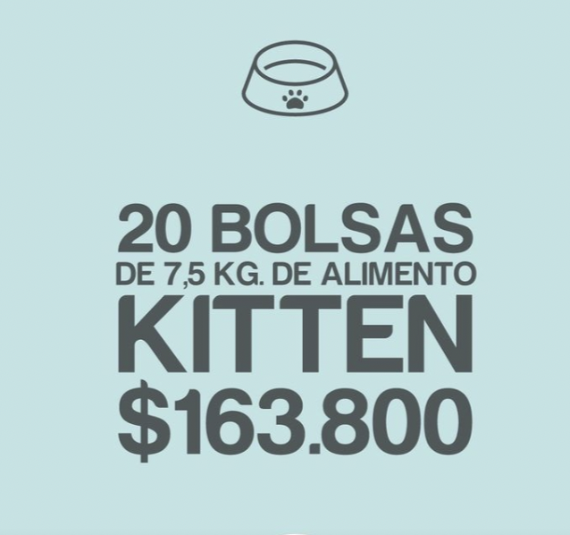
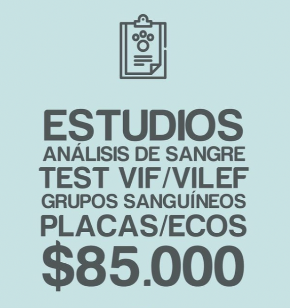
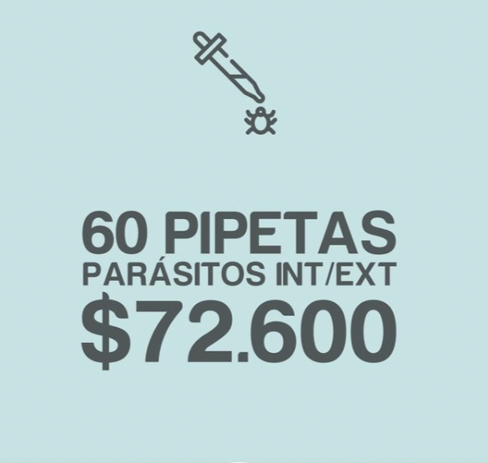
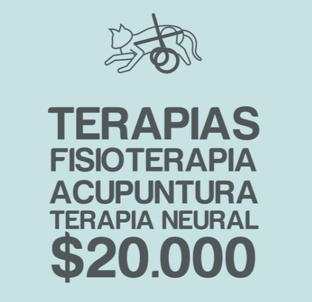
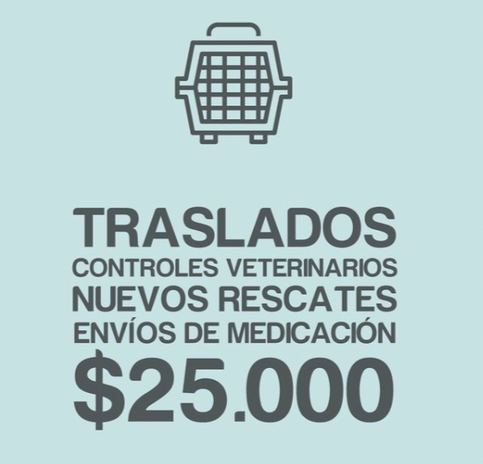
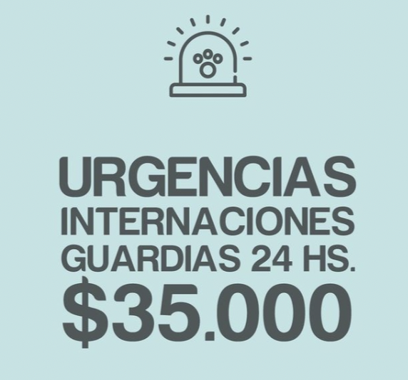
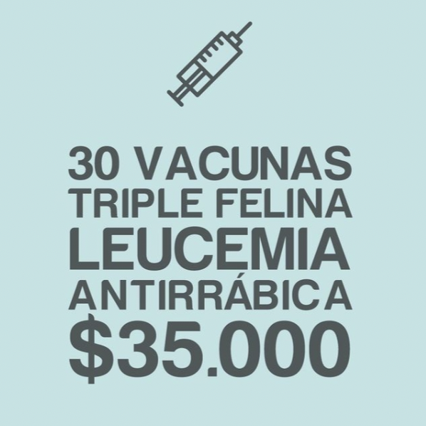

Todo lo que hacemos depende 100% del aporte voluntario de la gente, empresas y todos los que desean colaborar desinteresadamente. Contamos con un promedio de 60 gatos rescatados al mes, repartidos en 7 tránsitos fijos y algunos otros variables que se suman en determinadas ocasiones
Te contamos un poco en qué invertimos plata mensualmente y cuánto nos cuesta mantenerlo:
      Si querés colaborar de forma mensual por débito automático, hace click acá: